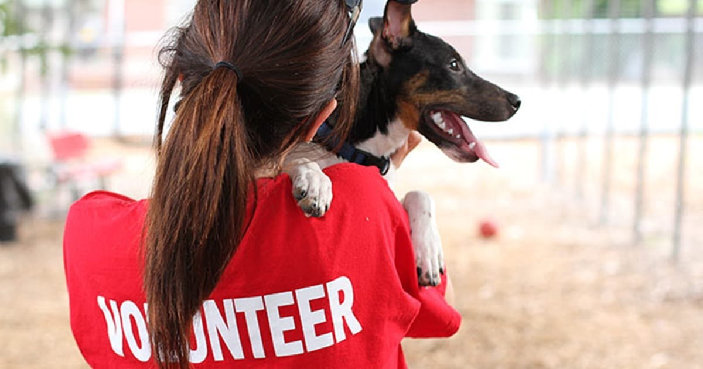

Volunteering with us is a rewarding experience that allows you to make a direct impact on the lives of rescued animals. Whether you help with pet care, foster animals, organize events, or assist in administrative work, your contribution matters.
By volunteering, you not only save lives but also become part of a community that shares your love and passion for animals.
Apply Now